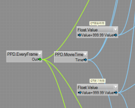

Project Diva Chart Designers in the fan community use either the PPDEditor or Comfy Studio to create charts.
The PPDEditor is older. Many people recommend using Comfy Studio and converting the charts from Comfy Studio to PPD.
However, the PPDEditor creates charts that are automatically compatible with PPD, and it may give you more creative freedom to do *literally* whatever you want in a chart.
Many of the following resources will be specifically for the PPDEditor - but the charting guides could be useful universally, if you just want to learn how to chart.
Click here to download Comfy Studio, an alternative Project Diva chart editor.
Click here to download Blizzin's PPDEditor Pack.
This pack comes with various scripts such as 'success,' and other Quality of Life improvements to make your time using PPDEditor easier and more creative.
Unzip everything in this pack, drag the items into your PPD folder, and replace everything when it asks.
To open the PPDEditor for the first time, open the PPDEditor.exe application in your main PPD folder.
Covers Basics, Publishing and Uploading and Adding Lyrics
Get started below:
Syncing
These three video guides were made by KageAruki.
Get started below:
Click here for a guide on standard multinote placements (like Project DIVA: Future Tone), by Allegro (Joosheroni).
This guide will teach you about using DivaScript, when to use right rotation so notes fly in properly, and Amplitude/Frequency/Distance/etc (parameters that affect how a note flies in). By Allegro (Joosheroni).
Click here to download the files needed to start making your chart F2nd style (stars, double arrows, etc).
Paste the base_scripts and resources into your project folder.
Then, be sure to copy everything from base_scripts into your Extreme/whatever difficulty you made folder.
This guide was written by siteswap.
By Blizzin, PPD's #1 Jeongyeon stan
Download this to get the Challenge Time script. Put it in your PPD files.
Find the two nodes with the comments above them and edit them for the start and end time. The top one is the start time, and the bottom one is the end time. Put the value in seconds, not minutes.
Guide by: Sach (PPD's #1 DBD Rabbit Furry).
When you upload a chart to the PPD Website, it will become available for all players to play and download.
When you upload a chart, make sure you upload the zipped version of the chart's folder. It does not need to have the mp4 movie, mp3 or image inside of it.
Put a link to the correct mp4 video/mp3/image in the 'target movie' bar.
Many chart designers will record an autoplay of their chart, upload it to youtube, and then embed it in their chart upload page.
To do this, type this into the description of your chart upload: [youtube id:xxxxxxxxx width:yyy height:zzz].
xxxxxxxxx is youtube's url after the 'v='. For example, 2fFUjR9fOqw.
width is optional. default is 640.
height is optional. default is 360.
Guide by KageAruki
Click here to download a version of PPDEditor that shows Divascript in the Editor itself.
If this version of the Editor crashes, it may be due to a newer PPD update. Download this as a fix.
This converts arcade future tone chart formats to PPD chart formats.